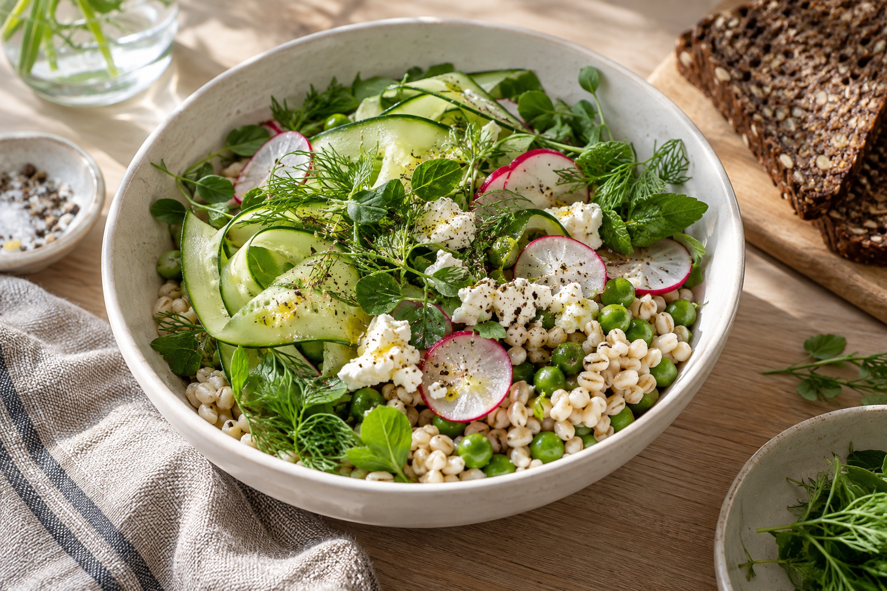
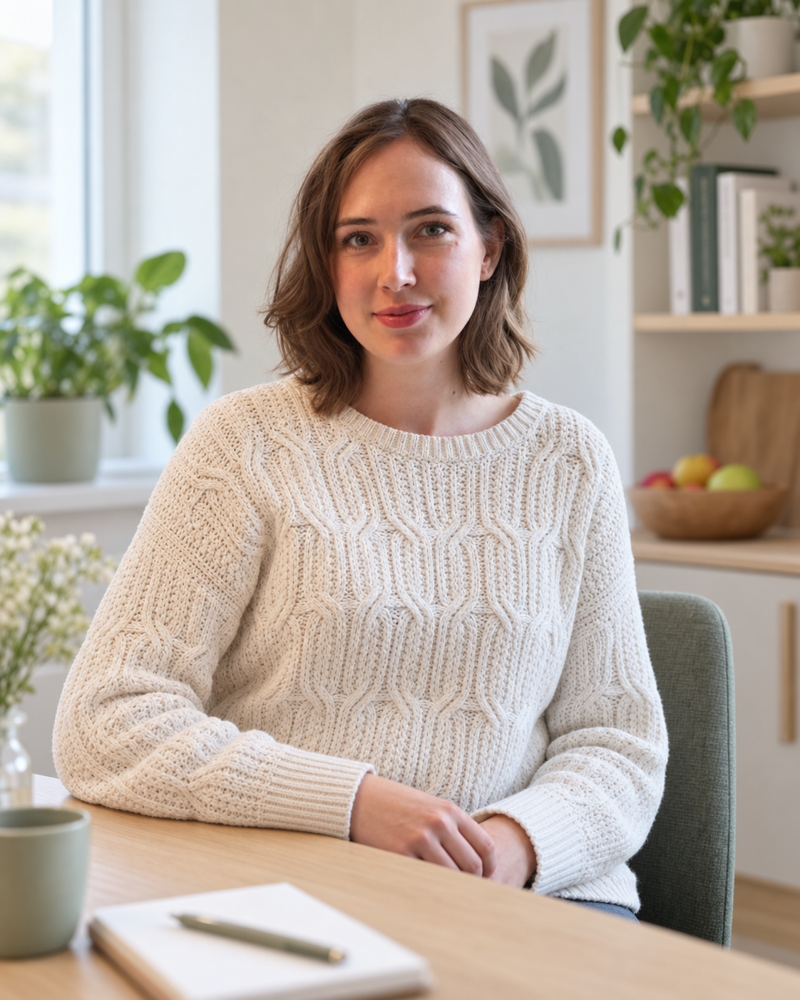

Vi begynder med dig
Når du starter et forløb hos mig, bruger vi tid på at finde ud af, hvordan din hverdag og kost ser ud, hvad der fungerer for dig – og hvad du gerne vil ændre.
Udkørende klinisk diætist
Både dér, hvor du er i livet, og helt praktisk. Som udkørende diætist kommer jeg hjem til dig og gør det nemt at få personlig kostvejledning.
Se, hvad jeg kan hjælpe medHjemme hos dig · Online · Aften og weekend

Personlig vejledning i trygge rammerEn diætist, der kommer til dig
Jeg møder dig, hvor du er. Det gælder både i forhold til, hvor du er i livet, men også rent praktisk. Jeg tilbyder nemlig konsultationer i dit eget hjem.
Jeg vil gerne gøre det nemt for alle at komme til diætist og arbejder derfor som udkørende diætist. Jeg kommer ud til dig. Det er også muligt at få onlinekonsultationer, og jeg tilbyder flere aften- og weekendtider.
Se området for hjemmebesøgEt forløb med dig i centrum
Vi finder sammen frem til løsninger, der giver mening i din hverdag og i dit liv.
Når du starter et forløb hos mig, bruger vi tid på at finde ud af, hvordan din hverdag og kost ser ud, hvad der fungerer for dig – og hvad du gerne vil ændre.
Jeg tager udgangspunkt i dig, dine behov og dine mål. Derfor handler et forløb hos mig ikke om strikse kostplaner, en masse opskrifter eller regler for, hvordan du skal spise. I stedet finder vi sammen frem til løsninger, der giver mening i din hverdag og i dit liv.
For mig er det vigtigt, at du stadig kan føle dig fri og have plads til både hverdage, weekender, sociale arrangementer og det, du holder af. Formålet er ikke kun, at du skal nå dit mål – men at du får nogle realistiske vaner og redskaber, som du kan bruge resten af livet.
Løsninger skal ikke passe til en perfekt hverdag.
De skal være perfekte til dig.
Hvad jeg kan hjælpe med
Jeg kan hjælpe dig med:

Om mig
Jeg er autoriseret klinisk diætist siden 2018 og møder dig med faglighed, nærvær og forståelse for, at alle hverdage er forskellige. Sammen finder vi løsninger, der passer til dig, dine ønsker og dit liv – uden unødvendige regler og strikse planer.
Priser
En første konsultation, en opfølgning eller et samlet forløb. Find den løsning, der passer til dig.
Den første samtale
1.050 kr.
75 minutter
Inkl. vejledende kostplan.
Kontakt om en samtaleEt samlet forløb
2.300 kr.
4 samtaler i alt
1 første konsultation på 75 minutter og 3 opfølgninger på 35 minutter.
Kontakt om et forløbDen næste samtale
550 kr.
35 minutter
Vi følger op på dine erfaringer og finder de næste skridt sammen.
Kontakt om opfølgningOpfølgningspakker
1.400 kr. ved hjemmebesøg
1.200 kr. online
2.200 kr. ved hjemmebesøg
1.900 kr. online
Kontakt
Jeg tilbyder konsultationer hjemme hos dig i Viborg og omegn. Du kan også møde mig online. Kortet viser en radius på 15 km. Ved kørsel ud over grænsen er der et tillæg på 10 kr. pr. km
Ring til Julie 23 90 57 19 ↗Hjemmesiden er under opbygning.